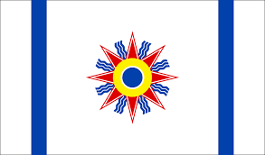

-

Neo-Aramaic/Chaldean Python Learning ToolWhile many people might turn to language apps or enroll in courses to learn a new language, I found myself having to invent my own educational materials from scratch. Determined to close a personal gap, I set out on a journey to learn Chaldean—a language passed down orally with almost no written resources or formal courses available. The Chaldean people originate from ancient Mesopotamia. Many Chaldeans originate from Iraq, with large populations in Michigan, California, and Arizona. Growing up in a Chaldean family and spending most of my childhood with my uncles and grandmother, I have always felt a deep connection to my heritage. However, to look out for me, my family didn’t believe it was important to teach me the language, as they believed I wouldn’t have many opportunities to use it outside of family conversations. As a result, I am only a novice and merely conversational in Chaldean. As I grew older, I became determined to close that gap, even though learning Chaldean presented significant challenges due to the lack of accessible resources. Because the language is largely passed down verbally, no one in my family could read or write it, and formal courses were difficult to find. I realized that to succeed in my goal, I would have to take control of my own learning process and develop my own resources based on my learning style as I continue teach myself. That’s when I decided to merge my technical skills with my language-learning goals. Here, I propose an open-source Chaldean learning tool equipped with flashcards and a tool to practice grammar by generating random gender-matched noun-adjective pairs and functionality for parsing verb conjugation patterns to teach various tenses (testing and verification in progress). This has helped me practice more effectively and brought structure to my learning. With the help of a local Chaldean instructor, I've began to record a pronunciation for each word to assist readers with their speaking. Soon, I plan to release a Chaldean-English translator to help members of my community learn English. GitHub